- CloudTrail records API activity within your AWS account, providing vital details about each action.
- Logs include information like user, service used, action performed, and response elements.
- CloudTrail logs are in JSON format, containing fields like eventTime, eventName, userIdentity, and more.
- Each record represents a single API call made to AWS.
- Unzipping Logs and Formatting: We start by downloading and unzipping the CloudTrail logs provided by the lab. The provided code snippet helps convert the logs into a more readable format using jq.
for file in *.json; do jq . "$file" > "$file.tmp" && mv "$file.tmp" "$file"; done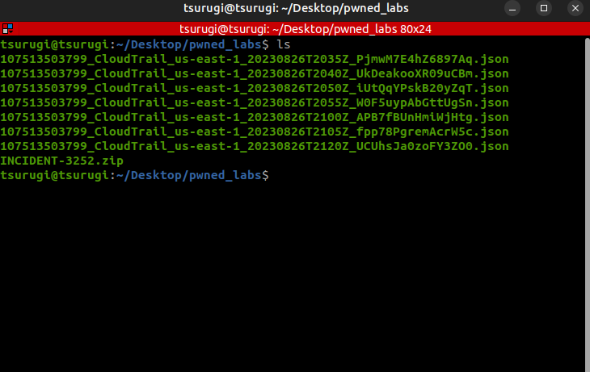
Understanding Log Structure: By examining the logs, we identify key fields like eventTime, eventName, and userIdentity.arn. This helps us understand what each record signifies.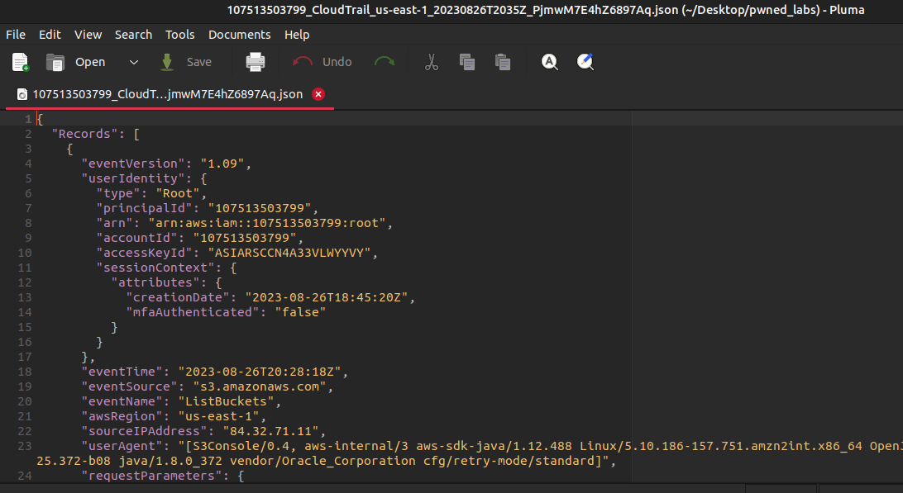
Identifying Suspicious Activity:- Listing Users: We begin by listing all users within the logs. This provides a starting point for further investigation.
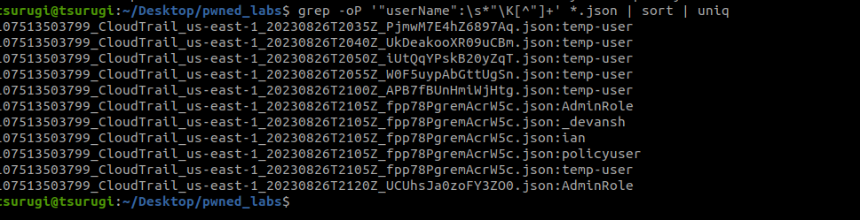
Grep vs. jq for User Extraction: While grep can be used for basic searches, it's not ideal for complex JSON structures. We leverage jq, a powerful tool specifically designed for processing JSON data, for more efficient and accurate user extraction.jq -r '.Records[].userIdentity.arn' *.json | sort | uniq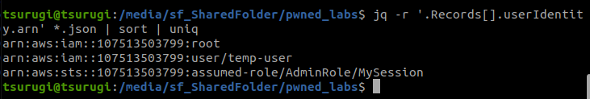
The temp-user and AdminRole are suspcious because the AssumeRole operation allows an IAM user, or an AWS service, to assume a role temporarily to access AWS resources. The AdminRole is a role with administrative privileges within AWS environment. Well, now I can begin by investigating the activity of each user, or we could use errors as the starting point for our investigation. grep -H enables us to determine which file contains the matching line. Consequently, we've located the file exhibiting suspicious activity associated with 'tempuser'.
Now we have 2 main errors:
First one:
grep -H enables us to determine which file contains the matching line. Consequently, we've located the file exhibiting suspicious activity associated with 'tempuser'.
Now we have 2 main errors:
First one:
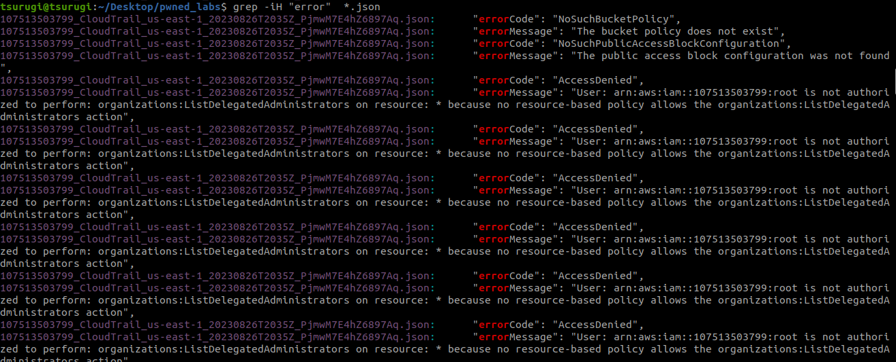
The fact that the root account was used can be a red flag. Best practices recommend minimizing the use of the root account and instead using IAM users or roles with the least privilege necessary. If the root account is being used for routine operations, it might be a sign of poor security practices. Second error: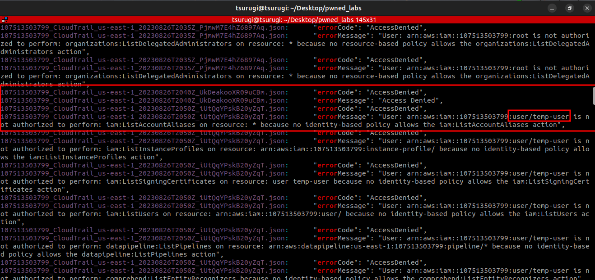
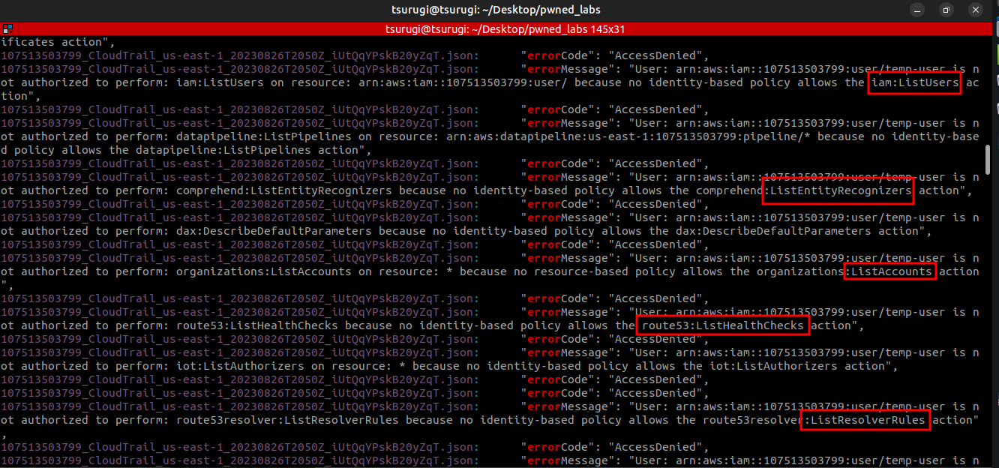
A temporary user attempting to list everything, which indeed constitutes malicious activity (enumeration). Investigating Temp User Activity:jq -r '.Records[] | select(.userIdentity.arn == "arn:aws:iam::107513503799:user/temp-user") | [.eventTime, .eventName, .sourceIPAddress]' *.json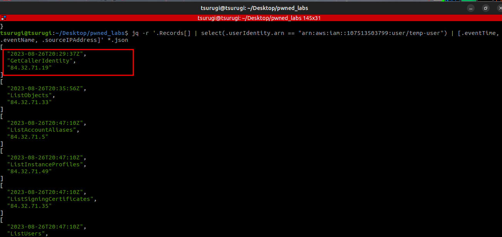
GetCallerIdentity is like the whoami command in AWS. the last activity was creating the assume Role we suspected before at 2023-08-26T20:54:28Z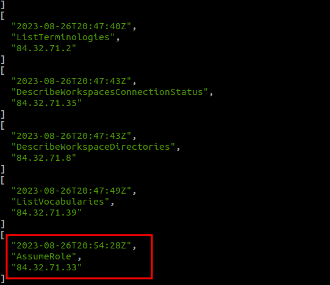
Then, searching for the AssumeRole activity: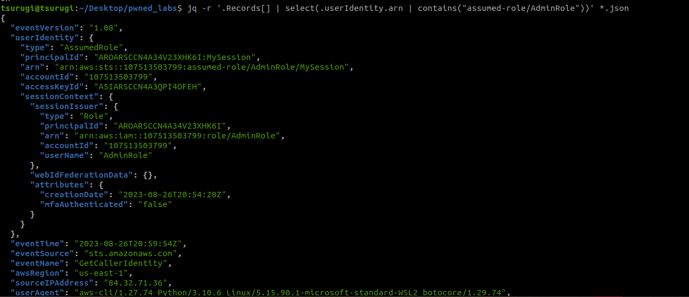
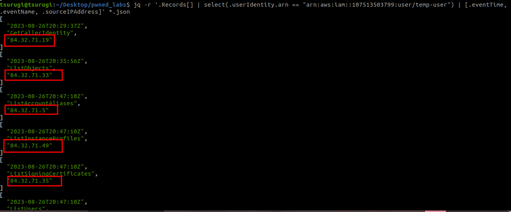
We also have clean IP addresses, but as we can see, they are in the same subnet and the same country: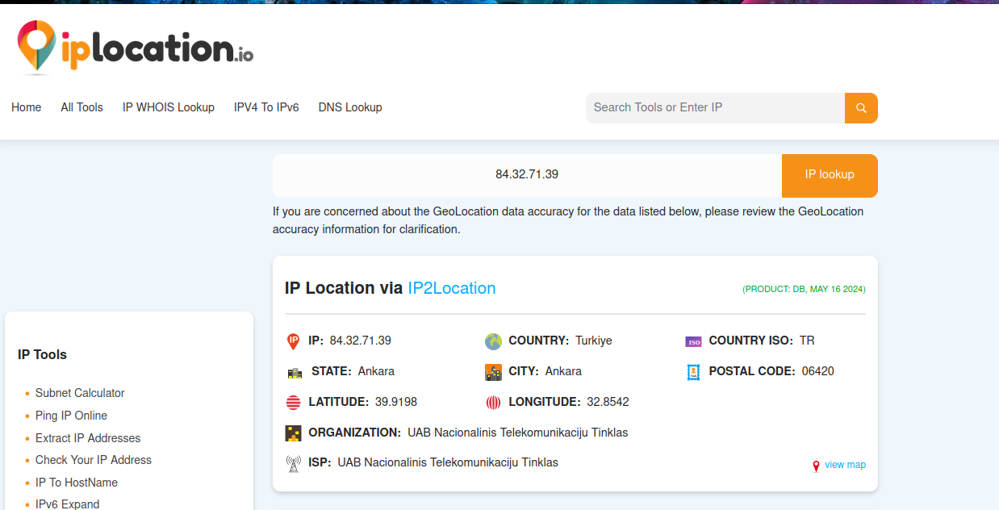
And this technique is called "IP hopping or rotation". It involves using a large pool of IP addresses, often from the same subnet or range, to send requests. The purpose is to avoid detection or blocking by systems that may be monitoring for suspicious activity from a single IP address. After investigating the AdminRole activity, we identified that data was exfiltrated as the attacker was able to retrieve and transfer the file 'emergency.txt':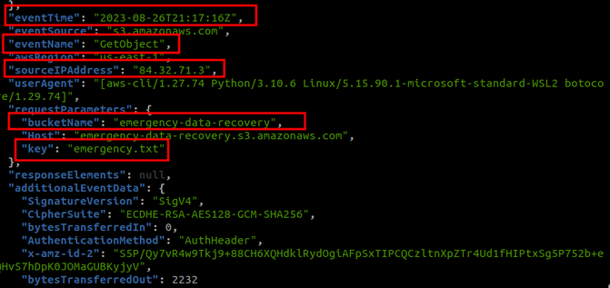